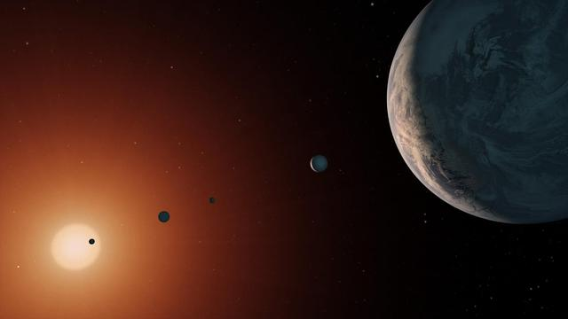

This visualization is based on exoplanets, which are planets that orbit stars outside of our solar system. Before 1992, scientists had not even been able to confirm that they existed. Today, NASA provides data listing more than 5,700 discovered planets. I chose this topic for a visualization because the growth in discoveries is easy to see through data. When scientists first began discovering exoplanets, they were only able to find a few. However, as technology developed and new tools became available, they were able to discover many more planets. This makes it interesting to see how the number of discoveries has changed over time. I have always been interested in how the rapid advancement of technology increases our ability to complete certain tasks. Because of this, I wanted to explore how improvements in technology have impacted scientific discoveries. Exoplanets are a good example of this because scientists have been able to find more planets as their tools and methods have improved. I was also interested in seeing which methods have been used most often to discover these planets and how different technologies have contributed to what we know today. Through this visualization, I wanted to make these changes easier to understand and compare.

ImageCredit: NASA/JPL Caltech
Each bar shows how many confirmed exoplanets were discovered in that year. Hover over a bar to see the exact number. The two tall bars in 2014 and 2016 line up with the Kepler announcements.
Data source: Kaggle dataset "NASA's Confirmed Exoplanets: Regular Updated" by jameskychoi, from the NASA Exoplanet Archive (data as of December 2024).